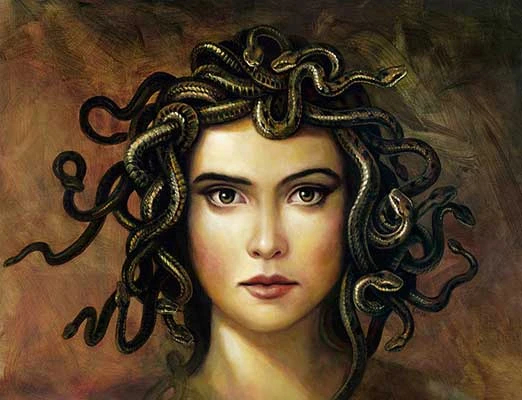

- Home - Earth - Animals - Space - Mysteries - History
Medusa

Introduction
While often depicted as a terrifying monster in popular culture, the story of Medusa according to the Roman poet Ovid is one of profound tragedy. In this version, she was not born a monster but was a beautiful mortal woman who became a victim of divine cruelty and social injustice.
The Priestess of Athena
In her youth, Medusa was a maiden of extraordinary beauty, renowned especially for her long, flowing hair. She served as a devoted priestess in the Temple of Athena, the goddess of wisdom and war. Because of her role, she was required to remain a virgin and uphold the purity of the temple.
The Tragedy at the Temple
Medusa’s beauty caught the eye of Poseidon, the god of the sea. Despite her devotion to the temple, Poseidon pursued her. When Medusa fled to Athena’s temple for sanctuary, Poseidon cornered her and raped her within the sacred walls.
Athena’s Curse (Victim Blaming)
Instead of punishing Poseidon for his crime, the goddess Athena was enraged that her temple had been "defiled." She directed her anger at the victim, Medusa. To punish her, Athena transformed Medusa into a hideous creature:
• Serpent Hair: Her beautiful hair was turned into a nest of venomous snakes.
• The Stony Stare: Athena cursed her eyes so that anyone who looked directly at Medusa would instantly be turned into stone.
This curse ensured that Medusa would live in total isolation, as she could never look at another living being without destroying them.
Death and the Hero Perseus
Medusa’s life of suffering ended at the hands of the hero Perseus. Sent on a quest to bring back her head, Perseus was aided by Athena and other gods. Using a polished shield to see only her reflection (avoiding her direct gaze), he beheaded Medusa while she was sleeping. Even in death, her severed head retained the power to turn onlookers to stone.
Modern Symbolism and Interpretation
In recent years, the perspective on Medusa has shifted significantly:
• A Symbol of Resilience: Many survivors of trauma see Medusa not as a monster, but as a symbol of the strength required to survive injustice.
• Victim Blaming: Her story is frequently cited as an early example of "victim blaming," where the survivor of an assault is punished while the perpetrator goes free.
• Protection: In ancient Greece, the image of her face (the Gorgoneion) was actually used as an amulet to ward off evil, suggesting that even in her monstrous form, she was a protector.